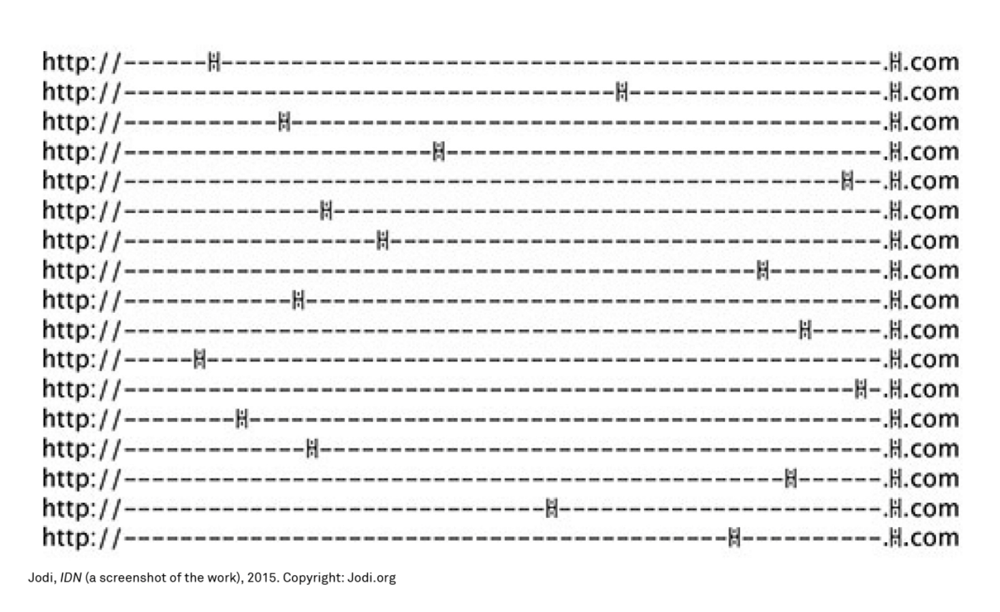
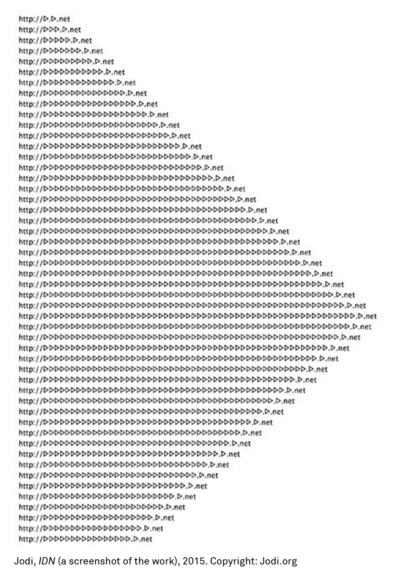

Jodi's IDN is a series of websites using single Unicode glyphs as domain names, all under the.net or .com top-level domains.
Besides the primary glyph domains, additional websites are referenced via internal links.
large textual patterns that mimic or otherwise reference the shape of the glyph itself. (Here
it's useful to compare HTML source to screen output, since the two often have different text justification
or line wrapping; Jodi has explored this interesting inconsistency since their earliest work on the Web.)
here is some intersting sample taht made by Unicode glyphs